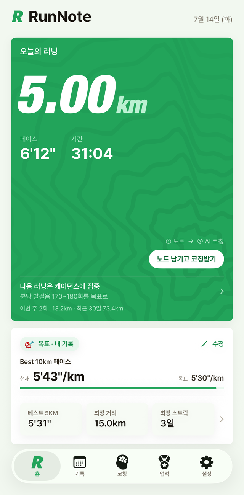

궁금한 건 물어보고, 부족한 건 다음 러닝에서 보완하고 —
그렇게 러닝은 점점 더 즐거워집니다.
"왜 오르막만 오면 숨이 찰까?" — 물어보세요. 코치가 답합니다.
오르막에서 페이스가 무너지는 패턴 — 다음 러닝은 케이던스로 보완해요.
오르막 페이스 유지 성공. 뛸수록 나아지고, 나아질수록 즐거워집니다.
"왜 5km만 넘으면 페이스가 떨어질까?"
당신의 심박·케이던스 기록을 근거로 답합니다"무릎이 좀 아픈데, 내일 뛰어도 돼?"
통증 노트 3주 치를 기억하고 있는 코치의 답은 다릅니다"장마철엔 어떻게 뛰어야 해?"
날씨는 자동 기록 — 빗속 러닝 데이터도 코칭 재료가 됩니다"다음 목표는 뭘로 잡을까?"
지금 실력에서 반 발짝 앞 — 부담 없는 다음 목표를 제안합니다